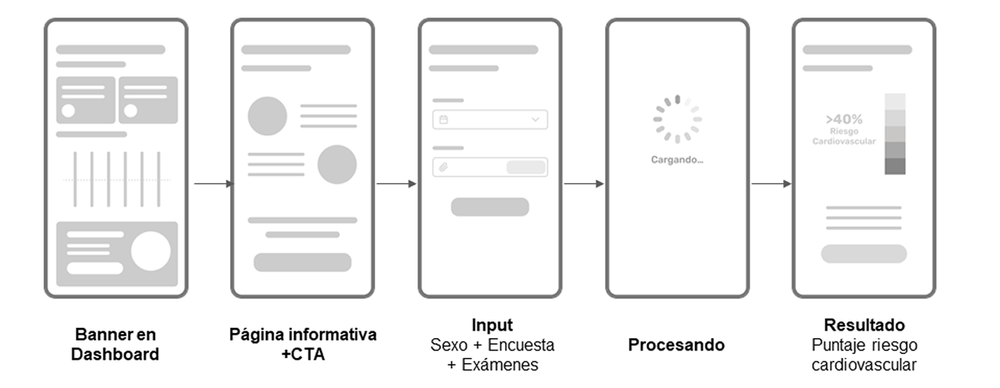
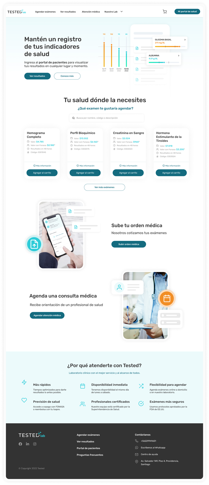

Tested
Portal de pacientes para visualizar resultados de exámenes en cualquier lugar y momento, con el objetivo de brindar información que ayude a mejorar la calidad de vida de las personas.

Problemática
El Laboratorio Clínico Tested detectó que al entregar los resultados de exámenes a sus pacientes, no existía información interpretativa que ayudara a las personas a entender su diagnóstico, lo cual generaba confusión y capacidad limitada para tomar decisiones informadas sobre su salud.
Objetivos
Crear una solución digital que transforme los resultados médicos en información accesible y comprensible para los pacientes.
Solución
Se creó un Portal para los pacientes, donde se podrán visualizar los resultados de sus exámenes de forma interpretativa, con ayuda visual e información educativa con un lenguaje simple.
- Brindar información interpretativa de los resultados de los exámenes de manera comprensible y accesible para los pacientes, agregando gráficos e interpretaciones.
- Mejorar la comprensión de los pacientes sobre los resultados de sus exámenes y su relevancia para la salud.
- Incorporar datos importantes respaldados por estudios científicos para proporcionar información validada y confiable, como por ejemplo el Índice de riesgo cardiaco.
Diseño UX/UI
- Benchmark: Análisis competitivo de soluciones similares
- User persona: Desarrollo de arquetipos de usuarios principales
- Arquitectura de información: Estructuración de contenidos y flujos
- Entrevistas de usuario: 15 entrevistas con pacientes y médicos
- Pruebas de usabilidad: 3 rondas de pruebas con prototipos
- Mejora continua: Implementación de feedback iterativo
- Wireframe: Desarrollo de esquemas de baja y media fidelidad
- Prototipo funcional: Creación de prototipo interactivo en Figma

User Persona

Wireframe
Primeras versiones
Versiones mejoradas
Desktop
Futuras funciones
- Subir resultados externos: cargar tus resultados desde cualquier centro médico a nuestra plataforma, para ser visualizados de forma interpretativa.
- Ver tu progreso en el tiempo: podrás llevar un control de la evolución de tus indicadores a través del tiempo, permitiendo detectar los cambios.
- Atención médica virtual: Tendrás un chat para resolver tus dudas y podrás realizar consultas mediante telemedicina.
- Despacho de medicamentos: una vez realizada la atención, podrás solicitar un despacho a domicilio de los medicamentos prescritos.